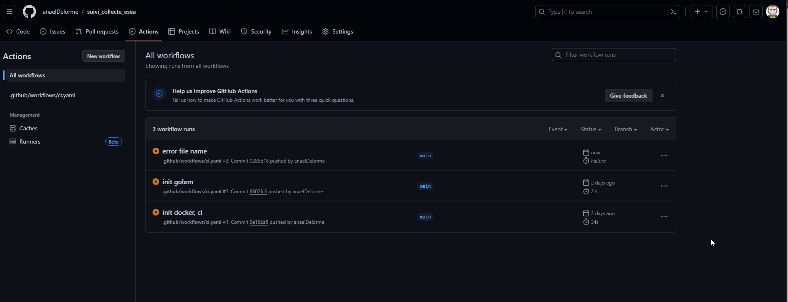
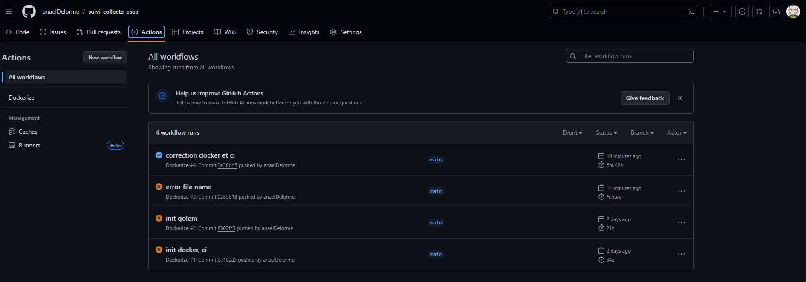
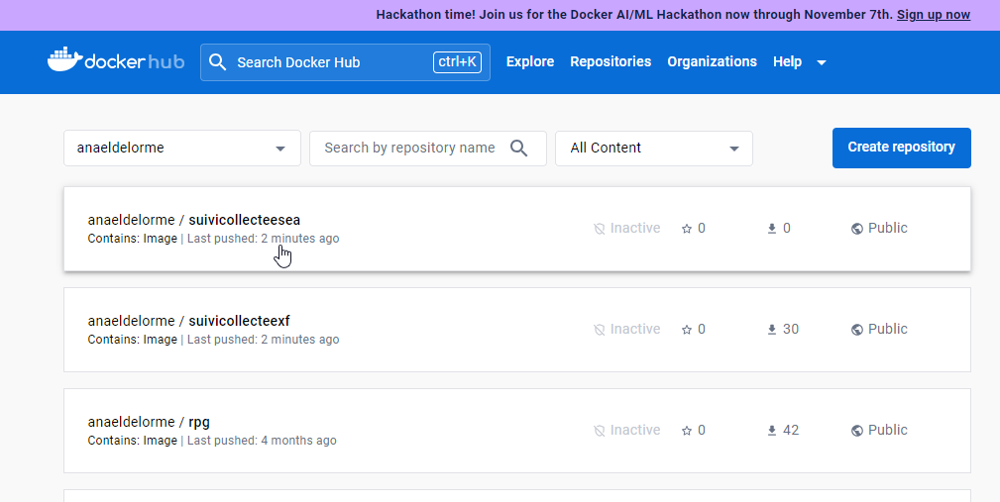
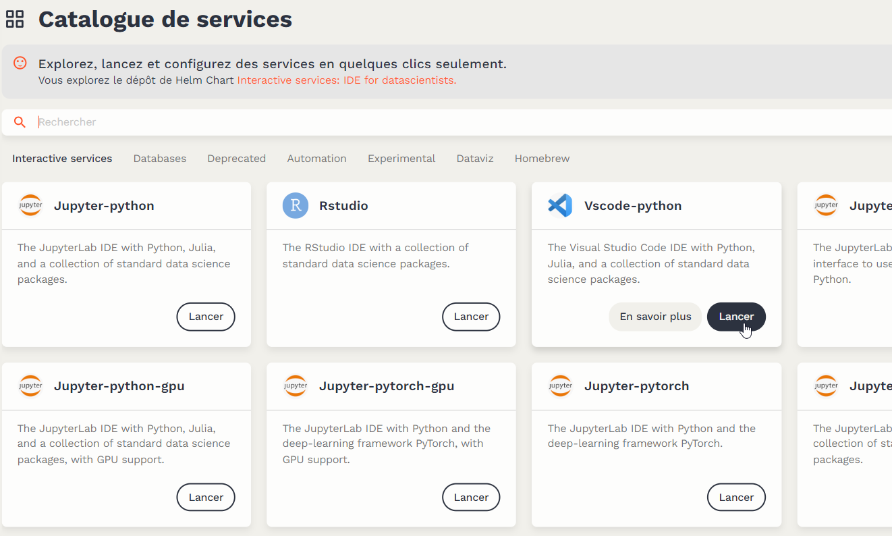
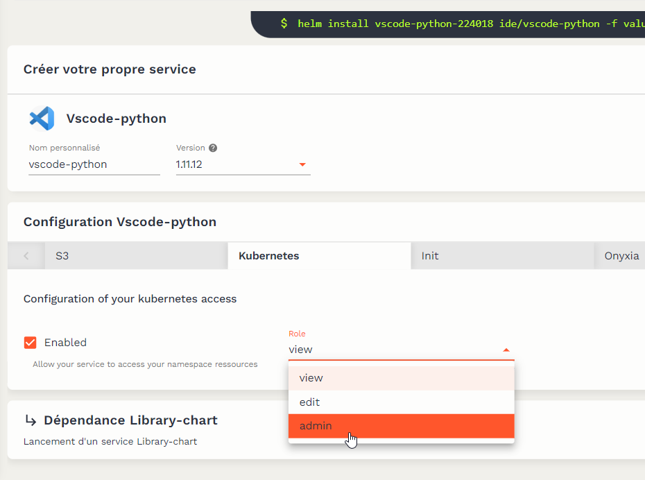
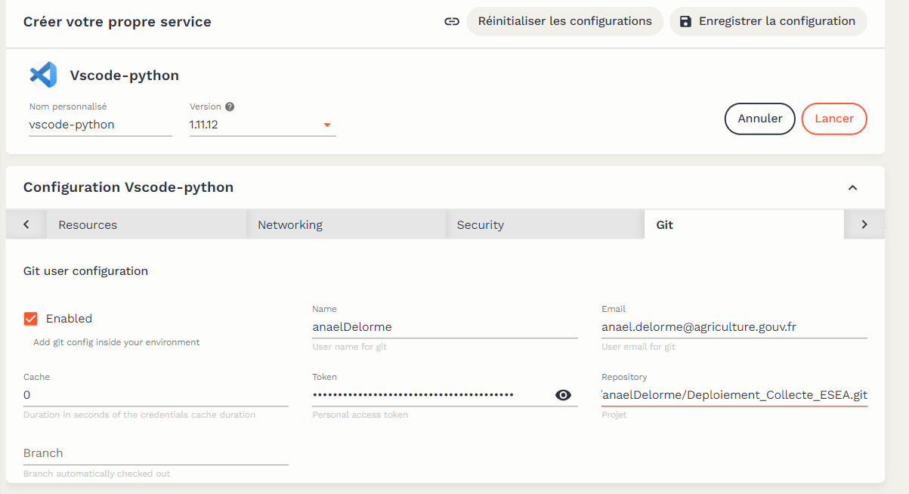

8 Déploiement de l’application
On a réussi à obtenir une première version du site de suivi de collecte. Maintenant passons à la publication sur internet de notre site. Le principe est le suivant :
- l’application shiny est transformée en R package grâce à golem, avec toutes ces dépendances;
- elle est mise dans un conteneur qu’on appelle Docker;
- le docker est déposé dans un site de stockage des dockers : dockerHub;
- le docker est déployé sur le datalab (grâce à Kubernetes)
8.1 Vérification du packaging du R package
Pour créer le Docker il faut s’assure que le R package puisse bien se créer. Pour cela, on lancera un attachment::att_amend_desc() puis on lancera la commande : devtools::check().
S’il y a une Error, il faut absolument la corriger avant de passer à la suite. S’il n’y a que des warnings et des notes, c’est moins grave, on peut passer à la suite.
8.2 Création du Docker
Pour créer le docker il y a 2 fichiers à ajouter à la racine du suivi_collecte_XXX :
- un fichier Dockerfile (sans extension) : c’est une liste de commandes permettant de créer le Docker,
- un fichier .github/workflows/ci.yaml : c’est un fichier qui permet faire l’intégration continue (ci) dans github. A chaque push dans Github, un flux de travail (Actions en github) est lancé. Dans notre cas ce ci permet de construire le Docker sur la base du fichier Docker et de l’envoyer dans DockerHub.
8.2.1 Dockerfile
Voici à quoi doit ressembler le fichier Dockerfile (a priori vous n’avez rien à modifier) :
# Base image
FROM rocker/shiny:4.1.2
# Install required linux librairies
RUN apt-get update -y && \
apt-get install -y --no-install-recommends libpq-dev \
libssl-dev \
libxml2-dev \
gdal-bin \
libgdal-dev \
libjq-dev \
libudunits2-dev
RUN R -e "install.packages('shiny', repos='https://cran.rstudio.com/')"
RUN R -e "install.packages('golem', repos='https://cran.rstudio.com/')"
# Install R package and its dependencies
RUN install2.r remotes
COPY suiviCollecte/ ./suiviCollecte
RUN Rscript -e 'remotes::install_deps("./suiviCollecte")'
RUN Rscript -e 'install.packages("./suiviCollecte", repos = NULL, type="source")'
# Expose port where shiny app will broadcast
ARG SHINY_PORT=3838
EXPOSE $SHINY_PORT
RUN echo "local({options(shiny.port = ${SHINY_PORT}, shiny.host = '0.0.0.0')})" >> /usr/local/lib/R/etc/Rprofile.site
# Endpoint
CMD ["Rscript", "-e", "suiviCollecte::run_app()"]8.2.2 Création d’un repository sur DockerHub
Pour pouvoir récupérer le Docker du site de suivi, il faut créer un repository sur DockerHub : Create repository
8.2.3 .github/workflows/ci.yaml
Voici à quoi doit ressembler le fichier ci.yaml (il faut modifier le anaeldelorme/suivicollecteexf où anaeldelorme est le nom d’utilisateur du dockerHub et suivicollecteexf le nom du repository DockerHub créé juste avant) :
name: Dockerize
on:
push:
tags:
- "*"
branches:
- main
jobs:
docker:
runs-on: ubuntu-latest
steps:
- uses: actions/checkout@v2
- name: Docker meta
id: docker_meta
uses: docker/metadata-action@v3
with:
images: anaeldelorme/suivicollecteXXX
- name: Set up QEMU
uses: docker/setup-qemu-action@v1
- name: Set up Docker Buildx
uses: docker/setup-buildx-action@v1
- name: Login to DockerHub
if: github.event_name != 'pull_request'
uses: docker/login-action@v1
with:
username: ${{ secrets.DOCKERHUB_USERNAME }}
password: ${{ secrets.DOCKERHUB_TOKEN }}
- name: Build and push
uses: docker/build-push-action@v2
with:
context: .
file: ./Dockerfile
push: ${{ github.event_name != 'pull_request' }}
tags: |
${{ steps.docker_meta.outputs.tags }}
${{ github.ref == 'refs/heads/main' && 'anaeldelorme/suivicollecteXXX:latest' }}
labels: ${{ steps.docker_meta.outputs.labels }}
- name: Image digest
run: echo ${{ steps.docker_build.outputs.digest }}8.2.4 Gestion des secrets DockerHub
Comme vous pouvez le voir dans le code, le dépôt sur le DockerHub est possible parce qu’on passe les variables secrets.DOCKERHUB_USERNAME et secrets.DOCKERHUB_TOKEN. Il convient donc de générer un token dockerhub : Procédure pour créer un token dockerHub.
Ensuite il faut mettre le username c’est à dire votre adresse mail (DOCKERHUB_USERNAME) et le token (DOCKERHUB_TOKEN) comme secret du répertoire Github. Tout est expliqué ici : Creating secrets for a repository
8.2.5 Test de création du Docker
Nous pouvons maintenant tenter de créer notre premier Docker. Pour cela il suffit de pusher du code dans Github. Vous pouvez par exemple modifier le fichier DESCRIPTION, le commiter et le pusher.
Allons voir sur Github, dans le menu Actions.
Si le workflow ne s’est pas lancé, vérifiez qu’il y a bien un ci.yaml dans .github/workflows. Si le worflow est en “failure”, comme dans l’image ci-dessous, entrez dans le workflow pour identifier et corriger l’erreur :

Si le workflow a bien fonctionné, vous aurez cela :

Vous pouvez maintenant vérifier dans DockerHub que le Docker a bien été déposé :

8.3 Gestion du déploiement
Notre Docker est sur DockerHub. Il ne reste plus qu’à l’installer sur le datalab en passant par Chart Helm.
8.3.1 Créer un autre repo github pour gérer la configuration du déploiement
Dans Github, créer un répertoire pour stocker les programmes permettant le déploiement du site. Par exemple un répo : deploiemenetcollecteesea. Copier le lien vers le repo
8.3.2 Créer un service VScode dans le datalab
Dans le datalab, créez un nouveau service VSCode avec les droits d’admin pour Kubernetes :



8.3.3 Ajouter les fichiers de configuration
Il faut ajouter 2 fichiers qui seront remontées à Github :
- Chart.yaml
Il faut modifier le nom du chart.
apiVersion: v2
name: suivi-collecte-esea
version: 1.0.0
dependencies:
- name: shiny
version: 1.0.0
repository: https://inseefrlab.github.io/helm-charts- values.yaml
Là il faut modifier le chemin et le nom du Docker sur DockerHub. Dans ingress, on a l’url de notre site de suivi qui sera forcément de la forme *.lab.sspcloud.fr.
Notez également l’existence de s3 et de existingSecret: suivicollecteesea-s3. Nous allons le voir juste après.
shiny:
image:
repository: anaeldelorme/suivicollecteesea
tag: latest
pullPolicy: Always
ingress:
enabled: true
hostname: collecteesea.lab.sspcloud.fr
s3:
enabled: true
existingSecret: suivicollecteesea-s3
resources: {}8.3.4 Gérer les secrets
Notre application a accès aux données sur le s3 et gère des variables en secret (identifiant / mot de passe du shinyManager). Pour gérer ces variables sensibles, nous allons inscrire ces informations dans un objet Kubernetes appelé Secret, qui va nous permettre de les passer à l’application sous la forme de variables d’environnement.
Pour cela nous allons créer dans notre VSCode un troisième fichier que nous n’allons pas importer dans Github. Créons ce fichier quelconque.yaml et un fichier .gitignore. Dans le fichier .gitignore, mettre uniquement quelconque.yaml. Cela indique qu’il ignorera le fichier quelconque.yaml et ne le remontera pas sur Github
Le fichier quelconque.yaml sera :
apiVersion: v1
kind: Secret
metadata:
name: suivicollecteesea-s3
type: Opaque
stringData:
AWS_ACCESS_KEY_ID: A CHANGER
AWS_SECRET_ACCESS_KEY: A CHANGER
AWS_S3_ENDPOINT: minio.lab.sspcloud.fr
AWS_DEFAULT_REGION: us-east-1
LOGIN_SITE_1: A CHANGER
MDP_SITE_1 : A CHANGER
LOGIN_SITE_2: A CHANGER
MDP_SITE_2 : A CHANGERConcernant AWS_ACCESS_KEY_ID et AWS_SECRET_ACCESS_KEY, il faut créer un ciompte de service sur la console Minio. Pour cela :
- menu “Identity” -> “Service Accounts” -> “Create Service Account” -> “Create”
- menu “Access Keys” -> “Create access key”
- comme précédemment, copier les informations de connexion dans votre quelconque.yaml
Pour LOGIN_SITE_1 / MDP_SITE_1, et les potentiels autres login/mdp, vous spécifiez ici les différents logins/mots de passe que nous fournirez à vos utilisateurs.
Quand le fichier est terminé, nous pouvez lancer dans un terminal du Vscode (File –> Terminal –> New terminal) : kubectl apply -f deploiemenetcollecteesea/quelconque.yaml
Si tout a bien fonctionné, un message devrait confirmer la création du secret. Du style secret/nom_de_secret created où nom_de_secret est ce que vous avez renseigné dans metadata.name du fichier quelconque.yaml.
8.3.5 Lancer le déploiement
Dans le terminal, lancer : helm dependency update deploiemenetcollecteesea. Puis helm install deploiemenetcollecteesea –generate-name.
8.3.6 Vérifier le déploiement
La première chose à vérifier c’est l’existence du helm en lançant : helm ls. Il faut que le status soit à deployed.